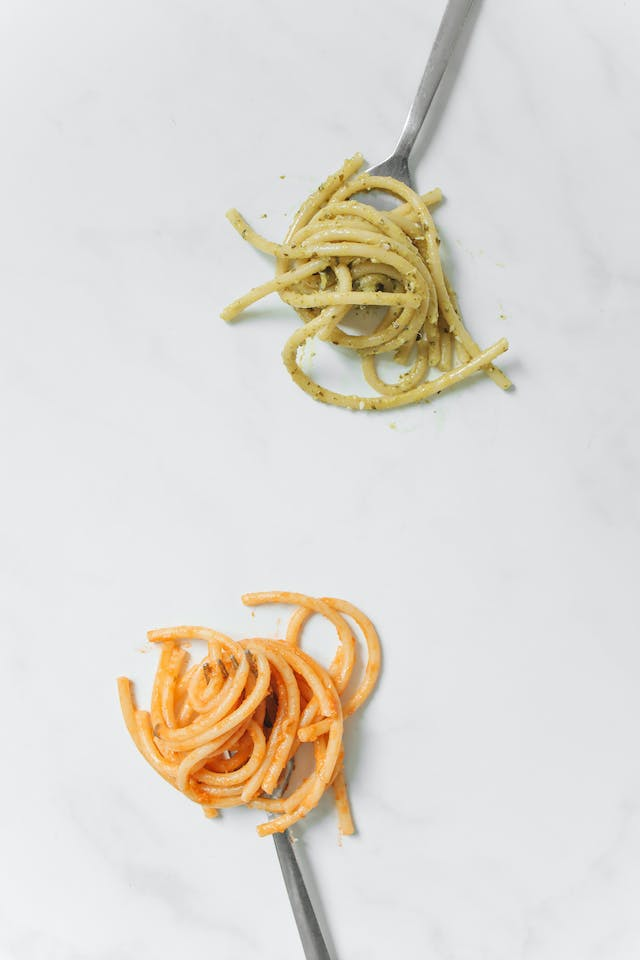

Buttered Noodles

Why buttered noodles?
Buttered noodles are simple to make with your favorite pasta, butter, Parmesan cheese, salt, and pepper for a quick and easy, kid-friendly dish. Fresh herbs and a little lemon juice could be added to amp up the flavor. Perfect to serve either as-is or alongside steak, chicken, or meatballs. It's such a delicious recipe, yet I get many questions on how to make it.
Ingredients
- 16 ounces of pasta
- 6 tablespoons butter, cut into pieces
- 1/3 cup grated parmesan
- Salt (to taste)
- Ground pepper (to taste)
Steps
- Gather all ingredients
- Fill a large pot with lightly salted water and bring to a rolling boil.
- Stir in fettuccine, bring back to a boil, and cook pasta over medium heat until tender yet firm to the bite, 8 to 10 minutes.
- Drain and return pasta to pot. Mix butter, Parmesan cheese, salt, and pepper into pasta until evenly combined.
- Serve hot and enjoy!
Recipe & Image Sources